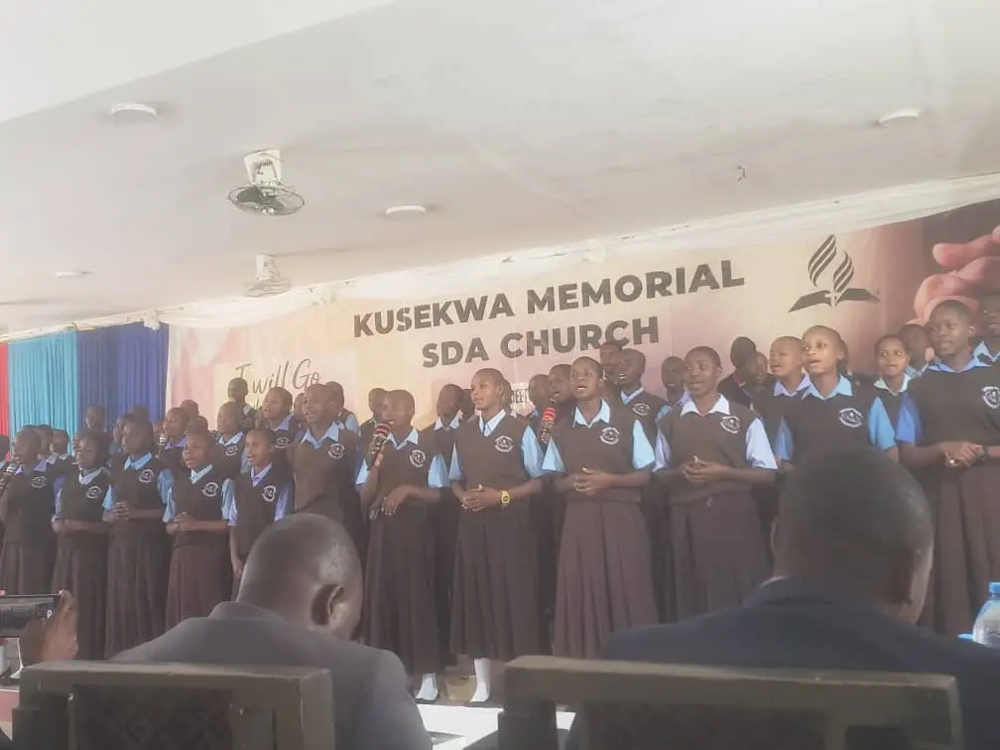

Bariadi · Tanzania
700 de oameni.
O școală.

Darasa · clasa
O tablă.
O clasă plină.

Kanisa · biserica
Biserica se strânge
în sala școlii.

Kazi · munca
30 de oameni.
O lună.
20 de elevi. O biserică și un dispensar.